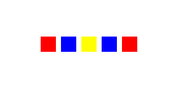
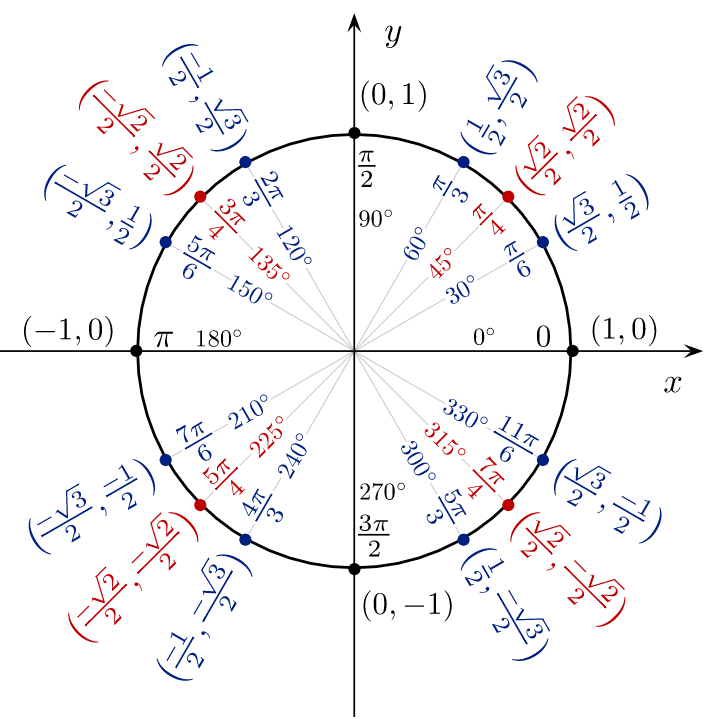
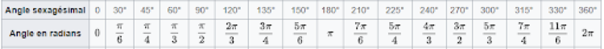

Comme en CSS3, il est possible de transformer nos canevas pour créer des formes plus complexes ou des animations.
Avant de commencer à étudier des méthodes de transformation, nous allons examiner deux méthodes indispensables à la création de formes plus complexes :
Voyons comment fonctionnent save() et restore() à partir d'un exemple simple.
See the Pen Untitled by OpenSpirit (@OpenSpirit) on CodePen.
La translation correspond au déplacement des coordonnées de l’origine. On utilise cette méthode via translate(x, y).
See the Pen Untitled by OpenSpirit (@OpenSpirit) on CodePen.
Pour effectuer une rotation, on va utiliser la méthode rotate(angle). La rotation va tourner les éléments du canevas dans le sens des aiguilles d'une montre, à partir du point d'origine. Les rotations se cumulent : si l'on crée plusieurs rotations successives, elles se cumuleront entre elles.
See the Pen Untitled by OpenSpirit (@OpenSpirit) on CodePen.
Les rotations modifient l’emplacement visuel du point d'origine. Cela peut être assez désorientant. Pour se repérer plus facilement, il peut être intéressant d'utiliser cette méthode avec translate.
En mathématiques, le cercle trigonométrique est un cercle qui permet d'illustrer et de définir des notions comme celles d'angle, de radian et les fonctions trigonométriques : cosinus, sinus, tangente.
Dans notre cas , il nous servira à travailler sur les cercles , demi-cercles, angles et les rotations. De manière très simplifiée, ce cercle nous permet d’associer un angle à une valeur de Pi afin d’utiliser cette valeur dans nos formules.
Tableau issu du cercle trigonométrique.
See the Pen Untitled by OpenSpirit (@OpenSpirit) on CodePen.
La méthode transform() permet de :
La méthode transform() prend 6 paramètres. Ces paramètres forment une matrice qui correspond à celle de transformation de l'API Canvas. Lorsque l'on utilise transfom(p1, p2, p3, p4, p5, p6), on multiplie la matrice de transformation courante par la matrice décrite par les arguments de cette méthode.
Reprenons l'exemple des carrés vu précédemment. Ce code fournira exactement le même rendu :
Les transformations permettent de modifier l'état des éléments du canevas. Il est possible de :
Il est possible de sauvegarder l'état d'un élément et de le restaurer.